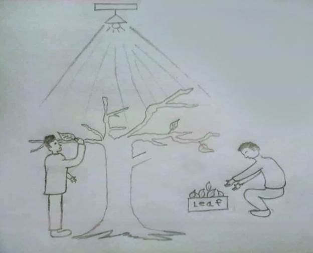
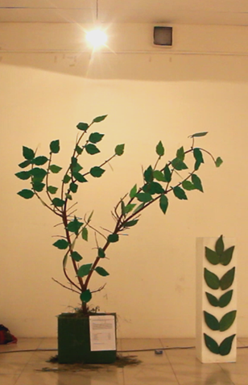
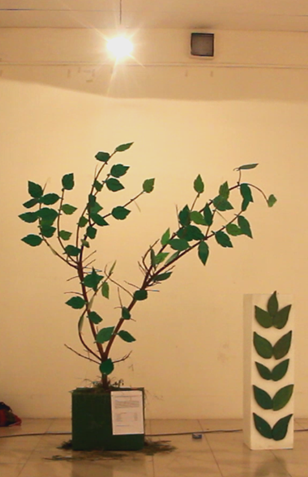
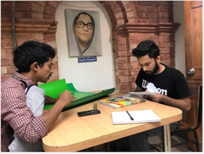
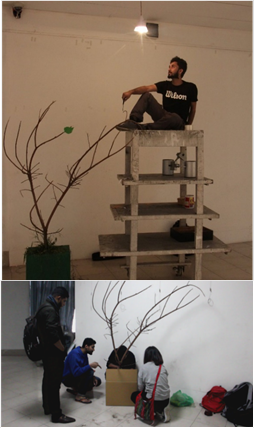
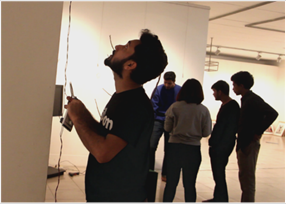
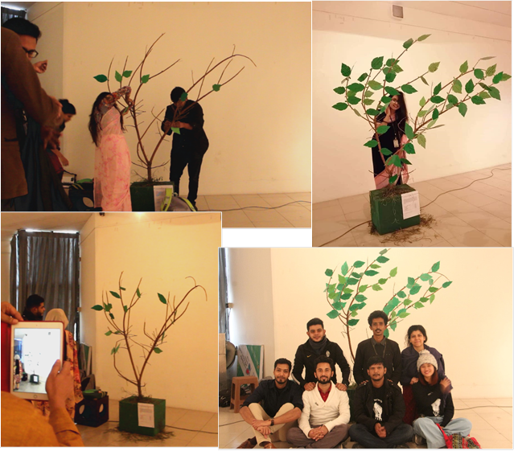

Project information
Project 6
Course Code and Name: MSJ11214 Convergence Communication 1
Project Name: Digital Art/ Art Installation
Project Theme: Youth Empowerment
Date of Project: Fall 2018
Project Description:
For this project, we create an installation art based on the CI theme, ‘Youth Empowerment’. The purpose of this theme was promoting youth power throughout the world to bring positive changes. Following this theme, we decided to make an audience engaging installation art in where we showed a leafless tree in the beginning and we offer our audience to take a leaf and write a positive note and fix it up in a branch of that leafless tree. By doing this at a certain time the tree will become full of leaves with lots of positive quotes. Which represents that if the people in this society inspire the youth by their positive word rather than criticizing them, the you will become strong and energetic as like as the tree we showed in the exhibition.
Project
Justification:
The purpose of this project was to spread the message
that, Youth needs the support of their surroundings (Friends, Family, Relatives
and others) to be empowered. Every youth have some special talent and have the
power to overcome any obstacle. They just need a proper guideline and support
to express their talent and overcome the obstacles. Being a youth, I have faced
many problem and able to solve some of the them by the positive words which I
got from my mother. If every parent and other people support their children, I
think every youth can be able overcome any obstacle and bring success in their
lives. And that’s why I choose this theme.
Convergence Communication 1
Final-term Examination. Fall, 2018
Individual Report
Submitted to:
A F M Shipu Moniruzzaman
Senior Lecturer
School of Social Science (SSS)
Submitted by:
Name : Samiul islam
ID : 173012001
Section : 02
Submission date: 23/12/2018
Title: Role of surroundings support in youth empowerment.
Group name: Creative Youth.
|
SN |
NAME OF MEMBERS |
ID |
|
1 |
Ambreen Barkat |
181010100 |
|
2 |
Zopari Lushai |
171012070 |
|
3 |
Imran Sadik |
163012047 |
|
4 |
Samiul Islam |
173012001 |
|
5 |
Mustafiz Mustafa |
173012003 |
|
6 |
Abdullah Al Abir |
173012006 |
|
7 |
Tohin Miah |
172012057 |
|
8 |
Wangkhem Thonglen |
172012065 |
Group member’s name:
Theme of Curriculum Integration:
Youth Empowerment
In my opinion youth empowerment is a kind of empowerment by which the youth can gain the ability to take the right decisions of their lives and they can bring change in our society for the betterment of a nation. Youth empowerment helps the youth to overcome any obstacles in their lives and help them to get a brighter future. Youth empowerment is not only the empowerment of the youth but also, it’s the empowerment of nation, because if all the youth of a nation are empowered, a nation will become empowered too. This will happen because a nation is consist of a large number of youth population and no nation can go forward without the youth.
Group theme:
The theme of our group is to spread the message that, Youth needs the support of their surroundings (Friends, Family, Relatives and others) to be empowered. Every youth have some special talent and have the power to overcome any obstacle. They just need a proper guideline and support to express their talent and overcome the obstacles. Being a youth, I have faced many problem and able to solve some of the problems. The main reason behind my success is the support of my mother. She always give me some positive advice like “don’t be upset, be brave” “you can do this, just think smartly and work properly” etc.
If every parents and other people support the youth like my mother does to me, I think every youth can be able overcome any obstacle and bring success in their lives. And that’s why I choose this theme.
Layout/Plan:

![The picture represents the installation art that we build on youth empowerment. In our art there was a leafless dead tree which represent the youth and at the side of the tree there was a box full of green leaves. The leaves were made of paper. Also, there was a brightness controllable focus light, set above the tree. In the beginning the brightness was be very low. We asked people from the audience to pick a leaf from the box and write an empowering message or positive advice on the leaf and stick the leaf to a branch of the tree with pin. That represent that the people of our surroundings encouraging the youth with positive message. Eventually, as more and more leaves gather on the branches of the tree, the brightness of the focus light increased. This indicate that, with a strong support system provided by their surroundings (friends and family), a youth can be able to overcome their drawbacks and limitations and move towards a brighter future.](Project-6_files/image003.png) 

Production:
The production process was really a good experience for me. In the beginning we were confused about our installation art but after a round table discussion which was held in the playground of our permanent campus, finally we decided to do this type of work. Then after the approval of our theme, we set a meeting in campus B (lobby). There we make a list of necessary things that we used in our installation art and make the work schedule and divide the work responsibility. Then after the meeting we went to shop and buy some things that is mention bellow:
Green papers – for make the leaves.
Pin – for attaching the leaves to the tree.
Marker – for writing message on the leaves.
After buying this things when we returning to home, we found a bunch of tree was lying on the street. Suddenly we went near and found exactly the same tree that we need for our work. Then we took the tree and came back home. After one day we started to make the leaf. As we all have our class we decided to make the leaf in our campus after class, so we bring the green paper and borrow a scissors from ULAB Media Lab and start cutting the paper in Campus B’s canteen. When we just finished making only half of the leaves the security of our campus came and told us “its 5.30pm your time is over, you have to leave the campus”. This is the 1st obstacle we faced. Then we went to campus A, as we know campus A remain open till 10.00pm so we decided to do our rest of the work there and we did there. The next day we went to an electronic shop to see the focused light setup. The setup was too easy so we decided to make to setup instead of buying. Finally the when the installation art setup came we went there in time and started to set up all the materials together while doing this we need to change the box(which will use to stand the tree). Instead of box we use a bucket because it’s cheaper. In the bucket we put some soil and planted the tree and wrap the bucket with a hardboard paper and paint it with green color. After that we faced a problem when we started to setup the light, because we bring light, wire cable and regulator but unfortunately the regulator was damaged that’s why we cannot control the brightness. So we went to a nearest shop and buy a new regulator and finally we became successful to setup the light. At the end our result of our work was successful because after facing some problems we can finish our work in time and according to our plan.
Materials that we used:
Tree, Light (60w), Regulator, Wire cable, Green paper, Marker, Pin, Glue, Bucket, Soil, Color (for painting the box under the tree).
|  |  | |||
|  | ||||
Exhibition:
We presented our installation art in Bangladesh Shilpakala Academy, Dhaka for the exhibition. Our work was showed in gallery 5. The place which was allocated for us, was very nice but according to our plan we need a dark place where we can control the brightness of light but the place was not that much dark that’s why the effect of our focused light was hardly noticed. But the show was very effective and appreciate able because everyone from the spectators was clear about our message and eagerly participating in our work and sticking the leaves to the branch of the tree with a positive comment. There were many spectators. Most of them are from our university and also some other spectators who are from other university and some of them were parents and relatives of the participants. For better exposition i think our installation should have shown at any other gallery where we can find the exact place that we need (pretty much dark), to feel the effect of the focused light because we can not find any dark place there.

Feedback:
I interviewed 5 persons there about the installation art that make. Three of them are my friend (Proma Chowdhury, Kazi dill Mohammad, Rubaya amin) and one was a senior brother (Jauadul Alam) and the other one is a patent of a student.
I choose them because in our installation art, we can 3 different types of people who are directly involved in the youth empowerment process, they are:
1. Youth.
2. Parents.
3. Surroundings People.
So, I choose these 3 categories of people, so that I can get the appropriate feedback from them about our concept as they are directly related with our concept.
I asked Proma Chowdhury, “being a youth, how can you help the youth to be empowered?”
She said: Basically, youth can empower another youth. If the youth stand beside one another’s at the time of one’s trouble. We can solve any problem and overcome any obstacle. It will also help our future youth too because today we are youth, in future our younger will be the youth and they will be inspired as we are showing them our positivity.
I asked her this question to know about her thought, being a youth what kind of steps we need to take to empower the youth.
Then I asked a question to Kazi Dill Mohammad to know about our concept, is our theme is clear to him or not?
He replied that, “the theme is very clear and interesting. Like this theme if we encourage the youth with positive message and give them hope, they can easily be success in life and make better future because there is no negativity.
Then I asked Jauadul Amal (senior brother) to know how our elder think about us (youth)?
He replied that without youth we cannot think progress because almost half of our population is youth. So, if we want to build a beautiful nation we need the help of youth. That’s why we have to encourage them and always stay positive to them.
Then I asked a parent that “what does he think? Do youth can bring change in our society and what kind of support he can give for the youth?”
He replied that,
“only youth can bring changes because we cannot do as much as they can do. Our
future will come by the hand of youth. Youth have the brain and strength, they
just need support from the others to achieve their goals.
Realization:
We got the exact same feedback from the audience as same as we want, because our art work was very simple and realistic. The spectators get our message clearly because our concept was clear enough. Our concept was youth just need positive support and that is reality. We build our art on a real theme that’s why everyone got the clearly. At the end I have realized that if we can do this type of installation art based on a real theme, people will understand better and we will able to deliver the message that we want to spread and create awareness. If I get the chance to do this installation again I will do it in the same way we did before but I will try to make it more realistic so that it can touch the heart of the spectators. The main strength of this work is youngness. When I get the opportunity to represent our work on “youth empowerment”, I feel very proud. So I get the strength of my work because I am a youth and representing the youth.
In our installation I did a mistake during the installation setting up period that is, I decided to take the regulator (for controlling the brightness of light) from home and took it with checking it, whether it is still working or not. After reaching Shilpaka academy when I started to control the brightness it was not working. So, we need to buy a new one and then we were able to control the brightness. Then I realized that we need check everything before a final work.
At last I want to say that the project we did, was very effective for the spectators because they are now aware about the message we want to deliver and clearly understand their role in our society. We should work on this type of project is to create awareness so that youth can get positive support from their surroundings and able to achieve their goals and work happily for the betterment of themselves as well as for the nation.
Learnings and outcomes:
Through this project I’ve learned:
● How to work as a team to make successful project.
● Learned how to present any idea in an artistic way.
● How to make proper plans before going direct to execution.
● How to create art project from waste materials.
● How to visualize idea before execution.
● Team management and leadership skills.
● Learned how to express feelings through art.